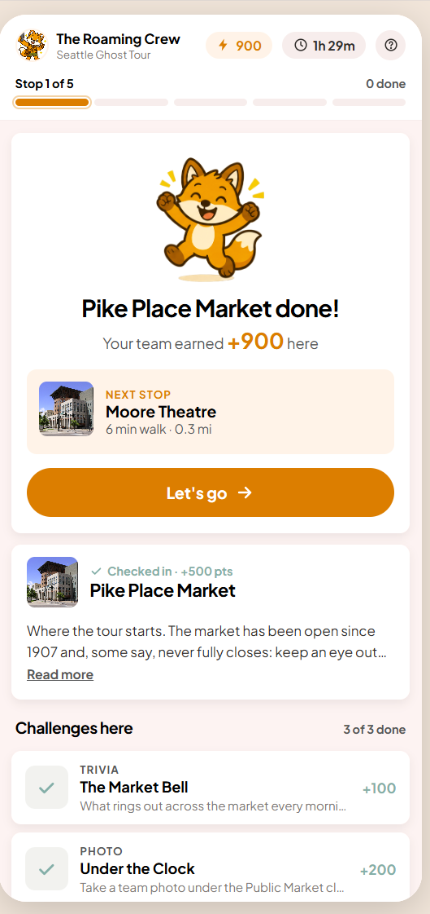

The hunt screen: what it needs to say
People spend the whole walking tour on this one screen, usually in a group, outdoors, often at night. Completion and satisfaction have dropped. Before touching pixels, this page sets out what the screen is for, the rules the redesign follows, and then puts the old and new side by side.
Part one
What this screen needs to communicate
Where do we go next?
The name of the next stop, a picture of it, and how long the walk is. Not "2.87 mi". "6 min walk".
What do we do when we get there?
Check in, then do these three things. Shown as a short list with a word for each: Trivia, Photo, Fill in. Not a colour code.
Are we doing OK?
"Stop 2 of 5" and a score. That is enough. Rank, rings, timers and breakdowns can wait for the end.
What if we're stuck?
A gate is locked, a question is too hard, the GPS is wrong. There is always a way forward and it never costs the team anything.
Anything on the screen that does not answer one of those four questions has to earn its place, or go.
Part two
Design philosophy
Clarity first. Reward second.
A group standing on a pavement should know what to do in one glance. Points, the fox and the celebration matter, but they come after the action, never instead of it. A hunt nobody finishes has no fun in it.
One next action
Every state of the screen has exactly one primary button: Directions, Check in, Submit, Let's go. If two things are orange, neither is the answer.
Never a dead end
Closed stop, hard question, bad signal: each has a plain way out (skip, hint, move on) and skipping never loses points. The worst outcome is a team that gives up.
Nothing you can't control can cost you
No GPS-accuracy score, no speed bonus, no countdown as the biggest number on screen. Groups that are enjoying the tour should not be punished for taking their time.
Say it in words
Labels beat colour codes and mystery icons. Plain English beats game jargon. "Check in turns on when you are within 50 m" instead of a greyed-out button and a guess.
One layer deep
The main screen is home. At most one sheet slides over it, and closing it always lands you back where you were. No modal on a sheet on a modal.
The moment after a stop is the whole game
Completion is a chain of "we finished here, now where?" moments. Each one gets a card that says next stop, walk time, go.
Use the brand as given
One typeface, one orange, one icon style, the fox. No emoji, no fourth font. Consistency reads as "finished", and finished reads as trustworthy.
Part three
Current screen vs redesign

Rank, four icons, a countdown, a 0% ring, two chips, a four-line explainer, a toggle, then five identical location cards. Nothing says "go here now".

One row of status. "Stop 2 of 5". One card: next stop, 6 min walk, one line of story, Directions, Check in (enables itself on arrival), and a way out if the place is closed.
| Principle | Current | Redesign |
|---|---|---|
| Clarity first | A dashboard. The first thing a group must do is work out which of five identical cards to tap. | One current-stop card fills the first screen. The next stop and the walk time are the headline. |
| One next action | No primary button. Four header icons, a "Map" chip, a "Show Ordered Locations" toggle and a side tab compete. | One orange button per state. On the way: Directions. Arrived: Check in. Then Submit, then Let's go. |
| Reward second | Rank "Top 50%", a "0% Complete" ring and point chips take the top third before any tour content. | Score is a small pill. The fox and "+900" appear only after a stop is done, then hand off to the next stop. |
| Never a dead end | "Location closed? Let us know." A locked gate ends the hunt for most groups. | "Skip this stop" on every stop, keeping all points and showing the next one. Questions can be skipped free too. |
| Nothing you can't control | "Accurate Check-Ins", "Finish Locations Quickly", "392 / 400 for Distance". Penalties for GPS and for enjoying the tour. | Flat +500 for checking in. No distance score, no speed bonus. Time is "1h 28m", quiet until the last ten minutes, hidden on untimed hunts. |
| Say it in words | Coloured tiles with no legend, unlabeled icons, "2.87 mi away" in white over a photo, "You checked in 0 min 16 secs ago". | Trivia / Photo / Fill in as words. "6 min walk · 0.3 mi" on a white card. Rules in a help sheet in plain English. |
| One layer deep | Location sheet, then a result modal, then a challenge sheet, then a question modal. Four close buttons. | One sheet. Results show inside it, "Next challenge" advances inside it, "Done" returns home. |
| The moment after | "Location Complete!" shows a score breakdown and a paragraph, then "Show Challenges". | "Stop done!" with points, the fox, the next stop, its walk time and "Let's go". |
| Brand as given | Four typefaces, three icon sets, emoji in the score breakdown. | Plus Jakarta Sans, design-system orange and cream, one stroke icon style, the Foxtrot mascot. |
At the stop
Principles 2, 5 and 6. The current app opens a third sheet with three chips and colour-coded tiles. The redesign keeps you on the main screen: checked in, then the challenges as labelled rows with points and a done state.


After the stop
Principles 1 and 7. This is the moment groups drift. The current app answers "how did we score"; the redesign answers "where next, how far" with a single button, and only then lets the points and the fox have their moment.


The detailed, screen-by-screen comments are in version 1 of this review. Measurement plan and next steps are in the written review.